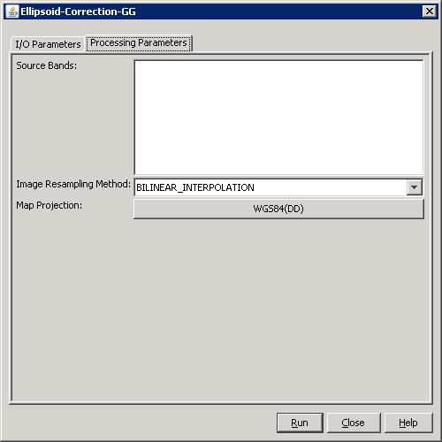

Ellipsoid Correction GG Operator
The operator implements the Geolocation-Grid (GG) method [1]. Unlike the Range Doppler Terrain Correction operator
it uses neither the orbit nor a DEM: positions come from the product's latitude/longitude tie-point grids and
the slant range from its slant range time tie-point grid, so relief displacement is not corrected.
Major Processing Steps
Some major steps of the algorithm are given below:
- Get the latitudes and longitudes for the four corners of the source image;
- Determine target image boundaries based on the scene corner latitudes and longitude;
- Get range and azimuth pixel spacings from the metadata of the source image;
- Compute target image traversal intervals based on the source image pixel spacing;
- Compute target image dimension;
- Get tie points (latitude, longitude and slant range time) from geolocation LADS of the source image;
- Repeat the following steps for each cell in the target image raster:
- Get latitude and longitude for current cell;
- Determine the corresponding position of current cell in the source image and
the 4 pixels that are immediately adjacent to it;
- Compute slant range R for the cell using slant range time and bi-quadratic interpolation;
- Compute zero Doppler time T for the cell;
- Compute bias-corrected zero Doppler time Tc = T + R*2/C, where C is the light speed
(not applied to COSMO-SkyMed, TerraSAR-X and RADARSAT-2 products);
- Compute azimuth index Ia using zero Doppler time Tc;
- Compute range image index Ir using slant range R;
- Compute pixel value x(Ia,Ir) using bi-linear interpolation and set it for current sample in target image.
Note on step (e): the code adds the full two-way travel time 2R/c. Range-Doppler Terrain Correction adds
R/c (half the two-way travel time) for the same bistatic correction, so the two operators place pixels at
different azimuth positions. Do not mix their outputs in one stack.
Parameters Used
The following parameters are used by the operator:
- Source Band: All bands (real or virtual) of the source product. User can select
one or more bands. For complex product, i and q bands must be selected together. If
no bands are selected, then by default all bands are selected.
- Image resampling method: Interpolation methods for
obtaining pixel values from
source image: nearest neighbour, bilinear (default) or cubic convolution.
- Map Projection: The map projection types. The orthorectified image will be presented with the user selected
map projection.
By default (WGS84(DD)) the output is in WGS84 geographic latitude/longitude; the Map Projection
parameter selects another coordinate reference system.

References
- Small, D., Schubert, A. (2008). Guide to ASAR Geocoding. RSL-ASAR-GC-AD, Issue 1.0, 19 March 2008, Remote Sensing Laboratories, University of Zurich.
- Schreier, G. (Ed.) (1993). SAR Geocoding: Data and Systems. Herbert Wichmann Verlag, Karlsruhe.
Processing parameters (reference)
GPT operator: Ellipsoid-Correction-GG. Generated from the operator source; parameter names are those used in GPT and graph XML.
| Parameter | Type | Default | Allowed values | Unit | Description |
|---|
sourceBands | String[] | | | | The list of source bands. |
imgResamplingMethod | String | BILINEAR_INTERPOLATION | NEAREST_NEIGHBOUR, BILINEAR_INTERPOLATION, CUBIC_CONVOLUTION | | Image Resampling Method |
mapProjection | String | WGS84(DD) | | | The coordinate reference system in well known text format |
Background
Prerequisites
- A SAR product that is not map projected; TOPS burst products must be debursted first
- A product with a slant range time tie-point grid
Next step
- Export or analyse the result